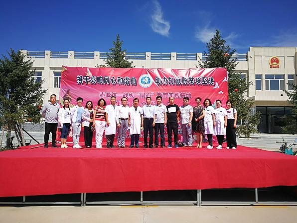
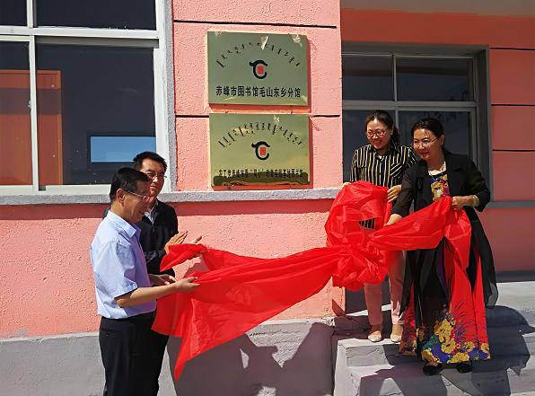
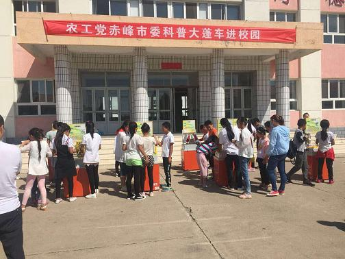
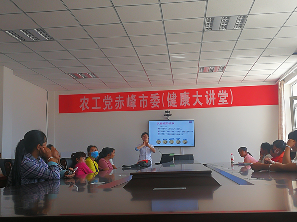
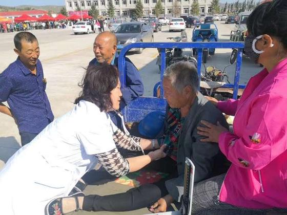

2018年8月25日，中共赤峰市委统战部组织赤峰市各民主党派、工商联、党外知识分子联谊会等统一战线成员单位赴赤峰市统一战线“同心”教育实践基地——翁牛特旗毛山东乡开展“携手奏响同心和谐曲、助力打赢脱贫攻坚战”社会服务活动。

按照活动主题要求，农工党赤峰市委组织开展了健康扶贫讲座、建立图书馆、义诊送药、科普大篷车进学校等系列活动。
1. 建立农工党赤峰市委“同心”教育实践基地图书馆。为丰富贫困农民群众的精神文化生活，帮助农民学习科技知识、提高生产技能，早日脱贫致富，农工党赤峰市委积极协调赤峰市图书馆，在毛山东乡建立了农工党赤峰市委“同心”教育实践基地图书馆，并捐赠1万元资金购置书架。

2.开展科普大篷车进校园活动。当科普大篷车开进毛山东乡中心小学时， 60多个小学生早已翘首等候在校园里。科普大篷车被誉为“微型流动的科技馆”，每一件展品都充满无穷的科学奥秘。此次活动，共设无形的力、滚出直线、调光玻璃、椎体上滑等30多个科技展台。30多件展品放好后，赤峰市实验小学科技辅导员、赤峰市年度科普人物、自治区青少年科学调查体验活动优秀教师、农工党员孟凌宇就带领孩子们一起动手操作、讲解原理、探索奥秘，启发孩子们从多角度理解展品背后科学原理，感受着科学知识带来的震撼和欢乐。

3.开展健康大讲堂活动。根据毛山东乡群众的实际需要，农工党赤峰市委在活动当日举办了《农工党健康大讲堂——现代社会女性如何喂养孩子和做好自身保健》公益讲座。赤峰学院附属医院乳腺外科副主任医师、全国手术比赛二等奖获得者、农工党赤峰学院委员会副主委郭俊杰通过幻灯片和通俗易懂的语言，深入浅出地讲授了孕育健康婴儿、新生儿哺乳期护理和科学喂奶等知识，介绍了不同时期乳房保健等科学知识，为40余位女同胞带来了一堂丰富多彩的婴儿喂养、护理及乳房保健课。现场互动气氛热烈，大家纷纷表示，这次讲座收获很大，今后要科学喂养孩子，并做好自身保健，关注自我、关注健康。

此外，还向毛山东乡群众发放20套《健康普及讲座》光盘，旨在帮助更多群众了解健康知识、养成健康生活习惯。
4.开展义诊活动。来自内科、外科、妇科、儿科、骨科、心外科、蒙中医、乳腺科的8位农工党员医学专家，用一上午的时间接诊300余人次，他们以精湛的医术、热忱的态度认真接待每位患者，精心诊治，耐心解答，并免费发放价值约1.5万元常用保健药品和保健茶。此次义诊使百姓不出远门就享受到高级水平的医疗服务，得到了当地群众的热烈欢迎和高度赞誉。
